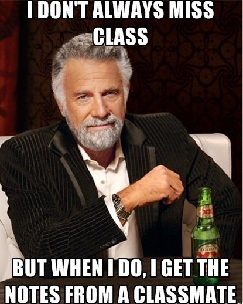

| This syllabus, the assignments, and
other aspects of the course are all subject to
revision as we go, as needed. |
Contents
Contact
information & office hours
Course goals & student outcomes
Texts
Grading & assignments
reading responses instructions
Course policies
How to succeed in this course
Course goals & student outcomes
Texts
Grading & assignments
reading responses instructions
Course policies
How to succeed in this course
Your host: Jeremy Anderson
E-mail: jeremyanderson@depauw.edu
Web: http://jeremyanderson.net
Phone: from campus, ext. 4679. From off campus, 765-658-4679.
Office: Come see me with or without an appointment for any reason large or small.
Web: http://jeremyanderson.net
Phone: from campus, ext. 4679. From off campus, 765-658-4679.
Office: Come see me with or without an appointment for any reason large or small.
Virtual (covid safe! convenient!): here on
Google Meet; let me know if you'll be dropping in.
Physical: Asbury 209. Please wear a mask in my office. (I have some if you need one.)
Hours: My office hours are MWF 10 - 11:30am; other times by appointment. I can often meet MWF 4pm, and remotely T & Th afternoons. (Times are Eastern Daylight Time (UTC-4:00) until November 3, when we switch to Eastern Standard Time (UTC-5:00).)
Physical: Asbury 209. Please wear a mask in my office. (I have some if you need one.)
Hours: My office hours are MWF 10 - 11:30am; other times by appointment. I can often meet MWF 4pm, and remotely T & Th afternoons. (Times are Eastern Daylight Time (UTC-4:00) until November 3, when we switch to Eastern Standard Time (UTC-5:00).)
Course goals & outcomes
The main focus of this
course is understanding and evaluating the assigned texts.
They show us important and influential philosophical
ideas.
Using these texts, I want to acquaint you with philosophy’s content and techniques, and sharpen your writing and thinking. Through reading, lecture, discussion, and writing you’ll get to know philosophy’s major divisions, including epistemology, metaphysics, and ethics, and some of the puzzles that philosophers think about. Does God exist? Is the outside world as it appears to be? Are we free? How should we lead our lives? You will learn about and evaluate major thinkers' answers to questions like these. You will enhance your critical thinking skills so that your beliefs can be better grounded in logic, deepened by an understanding of the issues at stake, and tempered with an appreciation of opposing views. In writing, you will practice expressing new and complex ideas. These critical reading, thinking, and writing skills are useful in every discipline and many walks of life.
Student outcomes
To put the above another way, students will be able to:
Learning Goals
Our work in this course furthers several of DePauw's learning goals (listed here under "The Purpose and Aims of DePauw"), specifically #2, 3, 5, 6, 8, 9, 10, and, I hope, #1.
Using these texts, I want to acquaint you with philosophy’s content and techniques, and sharpen your writing and thinking. Through reading, lecture, discussion, and writing you’ll get to know philosophy’s major divisions, including epistemology, metaphysics, and ethics, and some of the puzzles that philosophers think about. Does God exist? Is the outside world as it appears to be? Are we free? How should we lead our lives? You will learn about and evaluate major thinkers' answers to questions like these. You will enhance your critical thinking skills so that your beliefs can be better grounded in logic, deepened by an understanding of the issues at stake, and tempered with an appreciation of opposing views. In writing, you will practice expressing new and complex ideas. These critical reading, thinking, and writing skills are useful in every discipline and many walks of life.
Student outcomes
To put the above another way, students will be able to:
- State some central philosophical questions and
describe some of the main answers to those questions
that have been proposed.
- Analyze philosophical arguments, identifying
important strengths and weaknesses in those arguments.
- Develop their own views on important philosophical questions and defend those views in both speech and writing.
- Demonstrate your grasp of the above in reading responses, papers, exams, and discussion, at a level appropriate for a 100-level course.
Learning Goals
Our work in this course furthers several of DePauw's learning goals (listed here under "The Purpose and Aims of DePauw"), specifically #2, 3, 5, 6, 8, 9, 10, and, I hope, #1.
Texts

Our textbook is The
Broadview Introduction to Philosophy, Volume I.
Beware: there are several versions of this textbook; for
this course get Volume I, with the blue cover pictured
here.
You can get it as a physical book (ISBN 9781554814015) or as a PDF (ISBN 9781770487550, available on Google Play). Page numbers of the different versions may vary. Any readings not in BIP will be available from a Google Drive here on Moodle, or linked directly from the Assignments page.
If you cannot afford the textbook, see me right away! I have workarounds for many of the assignments if you need them. Don't fall behind by going without.
You can get it as a physical book (ISBN 9781554814015) or as a PDF (ISBN 9781770487550, available on Google Play). Page numbers of the different versions may vary. Any readings not in BIP will be available from a Google Drive here on Moodle, or linked directly from the Assignments page.
If you cannot afford the textbook, see me right away! I have workarounds for many of the assignments if you need them. Don't fall behind by going without.
Grading & assignments
As you might expect, your
grade will depend on how well you demonstrate you
understand, and have thought about, material brought up in
readings, lectures, presentations, and discussion. If and
when any independent research is required, your grade will
also depend on the quality of that research and on
demonstrating you understand and have thought carefully
about the material. Grades will be derived as follows:
Speaking & listening:
Writing:
Exams:
5% participation
Writing:
10% Reading responses
30% Three papers @ 10% each
30% Three papers @ 10% each
Exams:
10% Midterm exam 1
15% Midterm exam 2
30% Final exam
15% Midterm exam 2
30% Final exam
Speaking & listening
Writing
Exams
A list of assignments is posted to the class web site. Details and timing are subject to change. Dates for assignments, exams, etc. will be posted on our class schedule Google Doc.
Participation means showing you are
thinking about the course. That is not hard. One way is
to participate in class discussions, but you can also
get credit for discussing course-related things outside
of class: in person, by e-mail, or posting to the open
forum on Moodle. You can earn up to one point per
class meeting (i.e., three points per normal week).
Earning one point per week, by whatever means, will earn
you a B (85%) for participation. Participating less
often earns a lower grade; more often earns a higher
grade. Getting 16 points total, with about one per week,
will get you an A+ (100%).
Writing
Reading responses: These are to get you
thinking about the readings before class, and also to
practice writing and academic integrity.
Each assignment includes some reading questions. Asking you to write answers to all of them would be too demanding. So I ask that you turn in written answers to some, and that you do so regularly. Here's what I mean by "regularly" and "some": at least once per week, write a response to at least one reading question, before class, in the forums set up on Moodle. (If Moodle is down, e-mail it to me.)
Papers: In your papers you will critically evaluate arguments discussed in the class. They will allow you to practice, and improve at, expressing challenging ideas clearly and accurately and appraising them fairly. Assignments will be posted to the Papers web page as the time approaches, and we will take class time to discuss assignments and help you improve your writing before turning in final drafts.
Each assignment includes some reading questions. Asking you to write answers to all of them would be too demanding. So I ask that you turn in written answers to some, and that you do so regularly. Here's what I mean by "regularly" and "some": at least once per week, write a response to at least one reading question, before class, in the forums set up on Moodle. (If Moodle is down, e-mail it to me.)
Reading responses are
scored credit/no credit. To get credit, yours should:
If you find these instructions confusing, my apologies! Let me try explaining a different way:
Suggestion: if you take too long Moodle can log you out, which could wipe out your work. So try typing your response using a word processor first, then copy and paste your response into the forum before the deadline.
- Be on time. Your response should be in the right Moodle forum (they are here) and time-stamped by 10:00am before class. So, for example, if you want to turn in a response to Wednesday's assignment, turn it in by 10:00am Wednesday. (Suggestion: turn them in the evening before class.)
- Total at least 200 words. I mean, your answer(s) should total at least 200 words. Putting in your name, typing in the question, etc. do not count. Answering more than one reading question per assignment counts as one response.
- Respond thoughtfully and completely to one or more reading questions.
- I do not expect you to get the right answers
to the reading questions! I just expect you to
try to--and your errors help me see what I need
to help you with. So don't bother going online
or asking an AI for the answers, because then
I'll think I won't need to explain, and you
won't learn what you need to.
- Be carefully
proofread, and meet the academic
integrity requirements for writing in this
course. I don't expect polished poetry here. But
fix your grammar, spelling, and punctuation. Cite
any sources you use, including assigned texts,
whenever you use them, and put others' words in
quotation marks, per the academic
integrity requirements (specific instructions for
citing properly are here--use them!). Too
many/too serious errors in citation, grammar,
spelling, punctuation, etc. will keep a response
from getting credit. Integrity lapses may also be
charged as violations of DePauw's
Academic Integrity Policy.
If you find these instructions confusing, my apologies! Let me try explaining a different way:
First, to do one passing
reading response, try answering one reading
question. If your answer is at least 200 words, on
time, answers the question thoughtfully, meets the
requirements for integrity
and proofreading) it gets credit for one reading
response. If it's not at least 200 words, try
answering another question until you've got at least
200 words total. But no matter how many of that
assignment's questions you answer, it's still just
one reading response.
Second, to get an A+ for the assignment, you need 15 passing responses. There are 14 weeks where we have reading assignments you may respond to. Doing more than one passing response every week would be more than you need. All you need to do is turn in one per week and, in some weeks, turn in more than one, and see to it you total 15 passing responses by the last week of class.
Second, to get an A+ for the assignment, you need 15 passing responses. There are 14 weeks where we have reading assignments you may respond to. Doing more than one passing response every week would be more than you need. All you need to do is turn in one per week and, in some weeks, turn in more than one, and see to it you total 15 passing responses by the last week of class.
Still have questions?
Please ask. I'm happy to help.
Suggestion: if you take too long Moodle can log you out, which could wipe out your work. So try typing your response using a word processor first, then copy and paste your response into the forum before the deadline.
Papers: In your papers you will critically evaluate arguments discussed in the class. They will allow you to practice, and improve at, expressing challenging ideas clearly and accurately and appraising them fairly. Assignments will be posted to the Papers web page as the time approaches, and we will take class time to discuss assignments and help you improve your writing before turning in final drafts.
Exams
There will be two midterms
and a final. Each will be comprehensive, covering all
material previously discussed in the course. You may not
access texts or notes during in-class exams. Exams
account for 55% of the course grade, so you should
prepare for them. To help you succeed on exams, I offer
several resources besides lecture and discussion:
- The study guide identifies what you may be tested on: terms we learn, people we study, the arguments they give, and so on.
- Citations and links in the study guide direct you to material needed for giving good answers. Use them.
- The study guide also explains my expectations: how you should be able to respond to terms, what to know about the people we study, etc. There are some sample answers there, too.
- There will be review sessions before every exam. See the class schedule Google Doc.
- I can also help you with your answers to items on the study guide during office hours (or by appointment) and by email.
A list of assignments is posted to the class web site. Details and timing are subject to change. Dates for assignments, exams, etc. will be posted on our class schedule Google Doc.
Course policies
If any of these policies might be a problem for
you, please let me know and let's discuss it.
COVID-19 policies
Minimize distractions
Late work
Academic integrity
Letter grades and numerical scores will be related as follows:
Accommodations for disabilities etc.
If we need to hold class remotely, these will be the privacy policies:
COVID-19 policies
COVID-19 has not gone away
and our safety is vital. Safety measures may change as
we go. Please refer to DePauw's
guidelines.
For now, note that, per DePauw's current guidelines:
Attendance For now, note that, per DePauw's current guidelines:
- You must mask
with KF94, KN95 or N95 masks if you
(a) have symptoms consistent with COVID-19, or
(b) tested positive in the last 5 days, or
(c) were exposed to COVID-19 in the last 10 days.
For more information see this American Medical Association site regarding masking. - If you test positive, isolate. Do not attend in-person classes. Mask when around others. More instructions are here.
Be in class on time and
prepared to discuss the day's assignment unless you have
strong reason not to be. Covid
symptoms are a
strong reason (see above). I will check
attendance out of concern for you, but I will not lower
your course grade merely for missing class. (If you miss
much class you will lower your own grade.) If you cannot
make it to class, please let me know if possible.
Here are some special
situations:
- Excessive
absences: per
the Academic Handbook, you may have to drop
the course if you miss two weeks of class (six
meetings) regardless of why you are absent.
- Academically
approved (by the VPAA) extracurricular activities,
such as athletics: please inform me of
possible conflicts at the beginning of the semester
or as early as possible. I'm generally willing to
work with you, but be aware your extracurriculars do
not automatically let you miss class, make up a
missed exam, or get an extended assignment deadline.
You must ask faculty for permission, and we can say
"No." Read
the policy here.
- Religious
obligations: I support and follow DePauw's
policy on religious holy days. If your
religious obligations conflict with class meetings
or deadlines in this course, let me know at least
one week in advance. Then you are excused from
attending those meetings and I will work with you to
make up any work you miss.
- Final exams. DePauw
has strict rules about rescheduling a final exam.
Read them here in the Academic
Handbook. Always check the final
exam schedule before making travel plans.
Minimize distractions
Be here both physically
and mentally as much as you can and help others do the
same. Please set your cell phone, smart watch, PDA,
pager, etc. to vibrate only, and put them aside during
class. Laptops or other tech may only be used for class,
and if your usage seems to be a distraction to yourself
or others I may ask you to put it away.
Late work
Make-up exams may not be
allowed nor late papers accepted for full credit unless
there is a compelling excuse such as a serious medical
problem, University-recognized event, religious
obligation, etc. (See Attendance policy, above.) Notify me in advance if you can. I
may require documentation.
Academic integrity
We learn from others. I
expect ideas and words from other sources to show up in
your work. But we must acknowledge everyone and
everything we get help from when we use their help. When
others' words or ideas appear in your work -- whether
from assigned readings, classmates, me, research you do,
AI, or anything or anyone else -- you must cite them
whether you quote them or not. (Exception: in-class
exams.)
I take academic integrity
very seriously and I expect you to. Cheating is often
unintended, but even then it is a serious offense and I
may charge you with misconduct. The minimum penalty is
usually worse than turning in no work at all, and
penalties can include failing the course, suspension, or
expulsion. Much cheating is due to ignorance of the
standards for documenting sources, so you should:
- Read and follow my academic integrity instructions for writing in this course.
- Ask me any questions you have about academic integrity, preferably before you turn in your work.
- Get to know DePauw's policy and your obligations and rights, which are in the Academic Handbook.
- Use these resources to better understand academic integrity at DePauw.
You can avoid many integrity problems if you
follow these simple rules: if you use an idea you got
from someone or somewhere else, cite it; if you use
their words, put them in quotes and cite.
Letter grades and numerical scores will be related as follows:
| 100% = A+ | 87 - 89% = B+ | 77 - 79% = C+ | 67 - 69% = D+ | |
| 93 - 99% = A | 83 - 86% = B | 73 - 76% = C | 63- 66% = D | 59% or less = F |
| 90 - 92% = A- | 80 - 82% = B- | 70 - 72% = C- | 60 - 62% = D- |
If you take the course
Pass/Fail:
| 70% - 100% = Pass | 60% - 69% = D | 59% or less = F |
I assign letter grades
using the criteria stated in the University
Catalog’s Academic Policies. There is no grading
curve.
Accommodations for disabilities etc.
DePauw and I are committed
to providing reasonable accommodations to students with
properly documented disabilities -- psychiatric,
attentional, learning, vision, hearing, physical,
medical, etc. If you believe you may need an
accommodation because of a disability or learning
challenge, please contact Student
Accessibility Services to learn how to receive
accommodations and support. You must contact them; I
cannot do it for you. Student Accessibility Services'
phone number is 765-658-6267, their email is studentaccessibility@depauw.edu.
Please contact them at least one week in advance to
ensure enough time for accommodations to be made.
Otherwise, there is no guarantee they can be provided
when you need them. I cannot provide accommodations
until I receive an official ADA letter detailing the
accommodations you may have. Once I receive it, you must
discuss with me how to accommodate you in this course.
Accommodations are not retroactive.
If we need to hold class remotely, these will be the privacy policies:
To enable class
interaction, class will be taught synchronously if
possible, meeting via video conference during the hours
in the schedule of classes. This means virtually
visiting people's living spaces. Class meetings will be
recorded to serve as a learning resource for the class.
To respect your classmates, me, and those you live with:
- Do not share those recordings or any portion of them outside the class.
- Keep your camera on. (If this won't work for you, please talk with me about it.)
- There are advantages to having cameras on.
Having faces visible enables lip-reading and
interpreting facial expressions, which help us
better understand each other.
- You can prevent others from seeing your living space by using a background image or blurred background.
- Mind what your camera shows to others. For example, liquor bottles visible in an underage student's dorm room could be a problem. So could racist or otherwise offensive posters or paraphernalia in the background. Let's avoid that. Be mindful of DePauw's community standards and electronic communications policies.
How to succeed in this course
Read the assignments, and read carefully.
Make time, in a quiet space, to read. Not just once, not quickly like it’s a news article, but deeply. Turn off your TV, phone, radio, MP3. When reading online, close all other windows, set Skype to offline, turn off chats, and release yourself from Facebook etc. Philosophical texts reward focused, careful, and repeated reading. Besides, you can expect me to call on you with questions about it.
Reading assignments for this course typically consist of a selection written by a philosopher and some introductory material written by the book’s editor, Andrew Bailey. Bailey suggests you read the selection first, and then go back and read the introductory material, and then read the selection again (Bailey, xi). I recommend following this advice. (A few exceptions are noted on the Reading Assignments page.)
Come to class prepared. Bring the current reading and your notes with you. Bring your responses to the current reading questions with you.
Take detailed notes. Just copying what’s on the board or screen (or whatever I'm doing in class) may not be enough. If the notes you take during class are sketchy, take a moment after class to fill them out.
Participate a lot. Don’t allow yourself to stay confused or lost. Some students assume their questions aren't worth asking or their comments not worth making, but often others wanted to say the same thing. If you are not comfortable speaking in class, see me outside it.
If you miss class, make arrangements with others to share notes with you. I suggest agreeing with at least two other people in the class, at the beginning of the semester, to share notes. If class is taught remotely, watch the recordings.
Keep up with the study guide every week. When new items are added to the study guide, sit down with your books and notes and classmates (if you like--studying in groups is helpful) and write out the clearest, most complete and thoughtful answers you can. If you have trouble formulating answers, come see me for help. Study your answers regularly to prepare for class discussion and for exams. This will pay off.
Give yourself time to write good papers, including revising/rewriting them well before the deadline.
Get enough sleep. If that means you cut back on extracurricular activities, so be it, because:
You may need to work harder than in high school. The sort of effort that got you A’s in high school might not get you an A here.
Seek help when you need it, or when you think you might need it, or just because. You do not need an appointment to drop in, though we can make one if you like.
Reading is an act of
contemplation, perhaps the only act in which we allow
ourselves to merge with the consciousness of another
human being. We possess the books we read, animating the
waiting stillness of their language, but they possess us
also, filling us with thoughts and observations, asking
us to make them part of ourselves.... In order for this
to work, however, we need a certain type of silence, an
ability to filter out the noise.
David L. Ulin, “The Lost
Art of Reading,” Los Angeles Times,
8/9/2009
Make time, in a quiet space, to read. Not just once, not quickly like it’s a news article, but deeply. Turn off your TV, phone, radio, MP3. When reading online, close all other windows, set Skype to offline, turn off chats, and release yourself from Facebook etc. Philosophical texts reward focused, careful, and repeated reading. Besides, you can expect me to call on you with questions about it.
Reading assignments for this course typically consist of a selection written by a philosopher and some introductory material written by the book’s editor, Andrew Bailey. Bailey suggests you read the selection first, and then go back and read the introductory material, and then read the selection again (Bailey, xi). I recommend following this advice. (A few exceptions are noted on the Reading Assignments page.)
Come to class prepared. Bring the current reading and your notes with you. Bring your responses to the current reading questions with you.
Take detailed notes. Just copying what’s on the board or screen (or whatever I'm doing in class) may not be enough. If the notes you take during class are sketchy, take a moment after class to fill them out.
Participate a lot. Don’t allow yourself to stay confused or lost. Some students assume their questions aren't worth asking or their comments not worth making, but often others wanted to say the same thing. If you are not comfortable speaking in class, see me outside it.
If you miss class, make arrangements with others to share notes with you. I suggest agreeing with at least two other people in the class, at the beginning of the semester, to share notes. If class is taught remotely, watch the recordings.
Keep up with the study guide every week. When new items are added to the study guide, sit down with your books and notes and classmates (if you like--studying in groups is helpful) and write out the clearest, most complete and thoughtful answers you can. If you have trouble formulating answers, come see me for help. Study your answers regularly to prepare for class discussion and for exams. This will pay off.
Give yourself time to write good papers, including revising/rewriting them well before the deadline.
Get enough sleep. If that means you cut back on extracurricular activities, so be it, because:
Studies have shown that
sleep quantity and sleep quality equal or outrank such
popular campus concerns as alcohol and drug use in
predicting student grades and a student’s chances of
graduating.
Jane E. Brody, "An
Underappreciated Key to College Success: Sleep," New York Times,
8/13/2018
You may need to work harder than in high school. The sort of effort that got you A’s in high school might not get you an A here.
Seek help when you need it, or when you think you might need it, or just because. You do not need an appointment to drop in, though we can make one if you like.